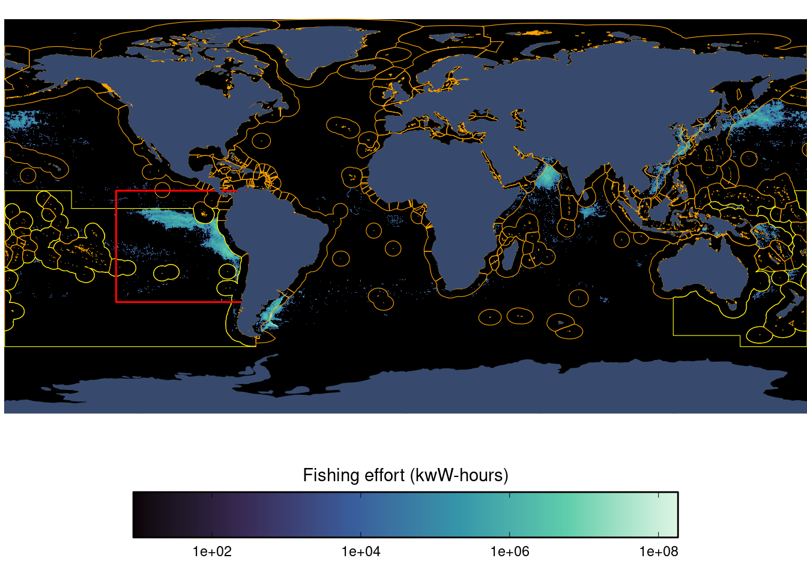
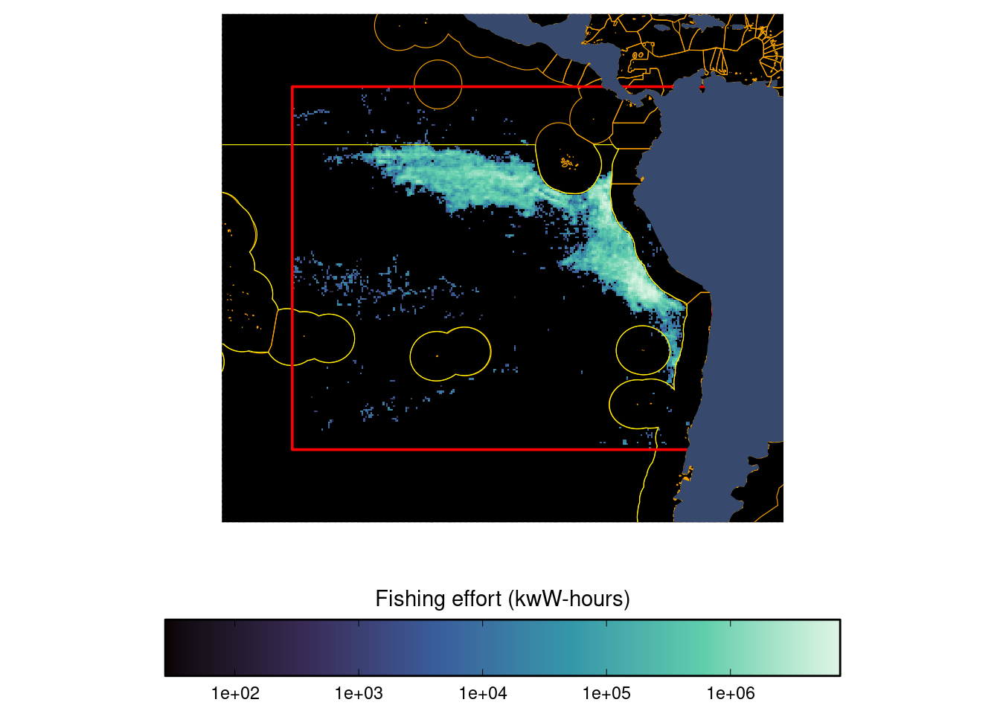

1 Methods
1.1 Data sources
1.1.1 Sea surface temperature (SST)
Sea surface temperature (SST) data come from NOAA’s Optimum Interpolation Sea Surface Temperature (OISST) version 2.1 (Huang et al. (2021)), which were downloaded from their Coast Watch ERDDAP server. The raw data are provided globally at 0.25x0.25 degree daily resolution. Keeping the full 0.25x0.25 degree spatial resolution, we temporally aggregate the daily data to monthly resolution by calculating the mean, standard deviation, minimum, and maximum from across the days in each month.
1.1.2 Sea surface temperature (SST) forecasts under climate change
We use SST forecasts under climate change from the IPCC WGI Interactive Atlas(Iturbide et al. (2021)). The Atlas provides a platform for accessing ensemble forecasts from CMIP6 (Coupled Model Intercomparison Project Phase 6), which represent the latest global climate forecasts available and served as the basis of the 6th IPCC Assessment Report.
We pull 1x1 degree monthly mean SST data for three time horizons:
- Near Term (2021-2040)
- Medium Term (2041-2060)
- Long Term (2081-2100)
And for each time horizon, we pull data from four climate change scenarios (more information on the scenarios can be found here:
- SSP1-2.6
- SSP2-4.5
- SSP3-7.0
- SSP5-8.5
This gives us a total of 12 different forecasts to analyze. The dataset can be loaded in targets using targets::tar_load(sst_cc_forecast_data), and it has the following columns:
- lon_bin: 1x1 degree longitude bin (degrees) (numeric)
- lat_bin: 1x1 degree latitude bin (degrees) (numeric)
- sst_deg_c_mean: Mean sea surface temperature from across the ensemble of CMIP6 models (degrees C) (numeric)
- time_period: Future time horizon forecast time period (character)
- scenario: Climate change scenario (character)
- month_number: Month number (numeric)
1.1.3 Oceanic Niño Index (ONI)
According to NOAA:
- “The Oceanic Niño Index (ONI) is NOAA’s primary index for tracking the ocean part of ENSO, the El Niño-Southern Oscillation climate pattern.”
- “The ONI is the rolling 3-month average temperature anomaly—difference from average—in the surface waters of the east-central tropical Pacific, near the International Dateline.”
- “Index values of +0.5 or higher indicate El Niño. Values of -0.5 or lower indicate La Niña.”
We downloaded these data from https://psl.noaa.gov/data/correlation/oni.data on September 27, 2024.
1.1.4 AIS-based Fishing effort
We use satellite-based individual vessel monitoring AIS data processed by Global Fishing Watch (Kroodsma et al. (2018)). We use the V3 pipeline table pipe_ais_v3_published.messages. Variables of interest within this table include the following (descriptions are taken directly from the schema for pipe_ais_v3_published.messages):
ssvid: source specific vessel id; MMSI for AIShours: time since the previous position in the segmenttimestamp: timestamp for positionlon: longitudelat: latitudenight_loitering: 1 if the seg_id of every message of a squid_jigger that is at night and not moving, 0 if not.
In order to minimize noisy data, we only include AIS messages that have a clean_segs boolean (i.e., all messages must have good_seg boolean and must not have an overlapping_and_short boolean). We filter to just those messages where night_loitering = 1. For squid jigging vessels, GFW uses the heuristic of night loitering to identify when they are fishing. Therefore, any hours where night_loitering = 1 can be classified as fishing_hours
We take the raw high-resolution AIS data and aggregate fishing_hours spatially (by 0.25x0.25 degree pixels, which are roughly 27.75km x 27.75km at the equator), temporally by month, and by flag. We currently process data from 2016-01-01 through 2024-08-31.
1.1.5 Vessel info
Vessel characteristics data processed are by Global Fishing Watch (Park et al. (2023)). We use the V3 pipeline table pipe_ais_v3_published.vi_ssvid_v20240601. Variables of interest within this table include the following (descriptions are taken directly from the schema for pipe_ais_v3_published.vi_ssvid_v20240301):
ssvid: source specific vessel id; MMSI for AISbest.flag: best flag state (ISO3) for the vesselbest.best_vessel_class: best vessel class for the vessel (using official registry information where available, or the GFW vessel characteristics algorithm where not available)best.best_engine_power_kw: best engine power (kilowatts) for the vessel (using official registry information where available, or the GFW characteristics algorithm where not available)activity.active_hours: hours the vessel was broadcasting AIS and moving more than 0.1 knotsactivity.offsetting: true if this vessel has been seen with an offset postition at some point between 2012 and 2019activity.overlap_hours_multinames: the total numbers of hours of overlap between two segments where, over the time period of the two segments that overlap (including the non-overlapping time of the segments), the vessel broadcast two or more normalized name, where each normalized name was bradcast at least 10 or more times. That is a bit complicated, but the goal is to identify overlapping segments where there were likely more than one identity. (this should be 0; if it is > 0, it can be used as a filter to remove potentially erroneous/noisy vessels)
We filter to just those vessels where best.best_vessel_class = squid_jigger. Additionally, to reduce noise, we filter out vessels that broadcast exceedingly infrequently (i.e., activitiy.active_hours < 24) or are noisy/spoofing/offsetting vessels (i.e., NOT activity.offsetting OR activity.overlap_hours_multinames > 0.) They are simply not reliable and will not provide good effort estimates. This leaves us with 1,561 squid vessels for our analysis.
1.1.6 Night light detections using VIIRS (Visible Infrared Imaging Radiometer Suite)
As an alternative to AIS-based fishing effort, we can use the NASA VIIRS (Visible Infrared Imaging Radiometer Suite) data product to detect night light emissions from vessels. When the appropriate radiance threshold is applied, these can generally be assumed to represent light-luring squid vessels. Since use only the single most accurate VIIRS detection measurements each day, these can also be thought of as representing a fishing effort metric of vessel-days. We use the VIIRS data as an alternative fishing effort metric to AIS-based fishing effort since AIS is not used on all vessels, and since it can also be disabled on the vessels that do use it.
We leverage the VIIRS boat detection (VBD) dataset developed by Elvidge et al. (2015). This dataset is available through GFW as the BigQuery table pipe_viirs_production_v20180723.raw_vbd_global. Variables of interest within this table include the following (descriptions are taken directly from the schema for pipe_viirs_production_v20180723.raw_vbd_global):
id_Key: Unique VBD ID.Date_Mscan: VBD pixel date-time at mid-point of DNB scan reported in Universal TimeLat_DNB: VBD pixel latitude from VIIRS DNB geolocation fileLon_DNB: VBD pixel longitude from VIIRS DNB geolocation fileRad_DNB: Radiance of VBD pixel in VIIRS DNB band
QF_Detect: Integer quality flag for VBD pixel, yielding information about quality and type of detectionSATZ_GDNBO: Satellite zenith angle relative to the VBD pixel measured from the local vertical (from VIIRS GDNBO file)File_DNB: VIIRS DNB HDF5 file
We then apply similar processing as Seto et al. (2023), which includes the following steps:
- Reduce false detections near South America caused by the the South Atlantic Anomaly (an abundance of high-energy particles in the atmosphere).
- Use a same radiance threshold of 10 nW cm−2 sr−1 used by Seto et al. (2023) (and established by Park et al. (2020)) in order to filter detections to those likely engaged in in pelagic light-luring activity.
- To eliminate double-counting when there may be multiple satellite overpasses on a single night, only count detections from the overpass with the smallest satellite zenith angle (smaller zenith angles are more accurate)
We then finally aggregate the total detections for each 0.25x0.25 degree pixel and month.
1.1.7 EEZ information
For each 0.25x0.25 degree pixel, we determine a number of EEZ features. To do so, we leverage the EEZ shapefiles and boundaries from Marine Regions v12(Institute (2023)). We first determine whether the centroid of the pixel is on the high seas or within an EEZ (high_seas). For pixels that are within an EEZ (eez_id), we determine its Marine Regions EEZ ID and its ISO3 sovereign country code (pixel_sovereign1_iso3); for pixels that are on the high seas, the EEZ id takes a value of high_seas and the country code also takes a value of high_seas. We next determine the distance in meters from the centroid of the pixel to the nearest 200nm EEZ/high seas boundary line (distance_to_nearest_eez_m); so for pixels on the high seas, this number represents the distance to the nearest EEZ; for pixels inside EEZs, this represents the shortest distance to the high sea. For high seas pixels, we finally determine the country EEZ ID (nearest_eez_id) and ISO3 sovereign country code (nearest_pixel_sovereign1_iso3) of this nearest EEZ; for pixels that are within an EEZ, this both take the values of the EEZ the pixel is within. Note that for our analysis, we exclude the Anarctica EEZ and treat it as the high seas; we also exclude any joint claim or disputed EEZs.
1.1.8 Joined datasets
1.1.8.1 SST and AIS-based effort
One version of the final dataset we use for our analysis is a combination of the gridded AIS-based fishing effort data and gridded SST data. We inner join the AIS-based effort and SST datasets by 0.25x0.25 degree pixel and month. We finally left join the Oceanic Niño Index (ONI) monthly data (by month) and the EEZ information (by pixel). Since the AIS-based effort dataset is disaggregated by flag, each row in the joined dataset represents flag-level effort in a given pixel and month, with the corresponding SST for that pixel and month.
Note that the joined dataset includes pixel-month-flags when have SST data but with no AIS-based fishing effort (i.e., the data are not conditional on there being some fishing effort for any given pixel-month-flag). These rows get a value of 0 for fishing_hours and fishing_kw_hours.
The joined dataset can be loaded in R using the command targets::tar_load(joined_dataset_ais). The dataset has the following colums:
- month: Month (first day of month) (date)
- flag : Fishing vessel flag (character)
- lon_bin: 0.25 degree longitude bin (degrees) (numeric)
- lat_bin: 0.25 degree latitude bin (degrees) (numeric)
- flag: Fishing flag (character)
- sst_deg_c_mean: Mean sea surface temperature, aggregated from the raw daily 0.25x0.25 degree data (degrees C) (numeric)
- sst_deg_c_sd: Standard deviation of sea surface temperature, aggregated from the raw daily 0.25x0.25 degree data (degrees C) (numeric)
- sst_deg_c_min: Minimum sea surface temperature, aggregated from the raw daily 0.25x0.25 degree data (degrees C) (numeric)
- sst_deg_c_max: Maxiumum sea surface temperature, aggregated from the raw daily 0.25x0.25 degree data (degrees C) (numeric)
- fishing_hours: Total fishing effort across vessels (hours) (numeric)
- fishing_kw_hours: Total fishing effort across vessels (kW-hours) (numeric)
- oceanic_nino_index: Oceanic Niño Index (ONI) (numeric)
- eez_id: Marine regions EEZ ID of the pixel; for high seas pixels, this takes a value of
high_seas(string) - distance_to_nearest_eez_m: This is the distance to the nearest 200nm EEZ/high seas boundary (for pixels on the high seas, this number represents the distance to the nearest EEZ; for pixels inside EEZs, this represents the shortest distance to the high seas) (meters) (numeric)
- nearest_eez_id: For high seas pixels, this is the Marine regions EEZ ID of the nearest EEZ pixel; for pixels within an EEZ, this is the Marine regions EEZ ID of the pixel (string)
- eez_iso3: For pixels within an EEZ, this is the ISO3 sovereign country code for the pixel; for high seas pixels, this takes a value of
high_seas(string) - nearest_eez_iso3: For high seas pixels, this is the ISO3 sovereign country code for the nearest EEZ pixel; for pixels within an EEZ, this the pixel’s ISO3 sovereign country code (string)
- high_seas: This is a logical indicating whether the pixel is within the high seas or not (logical)
1.1.9 Joined datasets
1.1.9.1 SST and AIS-based effort
One version of the final dataset we use for our analysis is a combination of the gridded AIS-based fishing effort data and gridded SST data. We inner join the AIS-based effort and SST datasets by 0.25x0.25 degree pixel and month. We finally left join the Oceanic Niño Index (ONI) monthly data (by month) and the EEZ information (by pixel). Since the AIS-based effort dataset is disaggregated by flag, each row in the joined dataset represents flag-level effort in a given pixel and month, with the corresponding SST for that pixel and month.
Note that the joined dataset does not contain flag-pixel-months with zero AIS-based fishing effort (i.e., the data are conditional on there being some effort for any given flag-pixel-month). If desired, once we have a spatial scope with which to restrict the analysis, we could construct a dataset for that bounding box that includes zero fishing effort flag-pixel-month rows.
The joined dataset can be loaded in R using the command targets::tar_load(joined_dataset_ais). The dataset has the following colums:
- month: Month (first day of month) (date)
- flag : Fishing vessel flag (character)
- lon_bin: 0.25 degree longitude bin (degrees) (numeric)
- lat_bin: 0.25 degree latitude bin (degrees) (numeric) * flag: Fishing flag (character)
- sst_deg_c_mean: Mean sea surface temperature, aggregated from the raw daily 0.25x0.25 degree data (degrees C) (numeric)
- sst_deg_c_sd: Standard deviation of sea surface temperature, aggregated from the raw daily 0.25x0.25 degree data (degrees C) (numeric)
- sst_deg_c_min: Minimum sea surface temperature, aggregated from the raw daily 0.25x0.25 degree data (degrees C) (numeric)
- sst_deg_c_max: Maxiumum sea surface temperature, aggregated from the raw daily 0.25x0.25 degree data (degrees C) (numeric)
- fishing_hours: Total fishing effort across vessels (hours) (numeric)
- fishing_kw_hours: Total fishing effort across vessels (kW-hours) (numeric)
- oceanic_nino_index: Oceanic Niño Index (ONI) (numeric)
- eez_id: Marine regions EEZ ID of the pixel; for high seas pixels, this takes a value of
high_seas(string) - distance_to_nearest_eez_m: This is the distance to the nearest 200nm EEZ/high seas boundary (for pixels on the high seas, this number represents the distance to the nearest EEZ; for pixels inside EEZs, this represents the shortest distance to the high seas) (meters) (numeric)
- nearest_eez_id: For high seas pixels, this is the Marine regions EEZ ID of the nearest EEZ pixel; for pixels within an EEZ, this is the Marine regions EEZ ID of the pixel (string)
- eez_iso3: For pixels within an EEZ, this is the ISO3 sovereign country code for the pixel; for high seas pixels, this takes a value of
high_seas(string) - nearest_eez_iso3: For high seas pixels, this is the ISO3 sovereign country code for the nearest EEZ pixel; for pixels within an EEZ, this the pixel’s ISO3 sovereign country code (string)
- high_seas: This is a logical indicating whether the pixel is within the high seas or not (logical)
Here we summarize these data (Table 1.1):
Table 1.1: Summary statistics for joined dataset that includes gridded SST and AIS-based fishing effort
| Name | joined_dataset_ais |
| Number of rows | 41267304 |
| Number of columns | 17 |
| _______________________ | |
| Column type frequency: | |
| character | 5 |
| logical | 1 |
| numeric | 10 |
| POSIXct | 1 |
| ________________________ | |
| Group variables | None |
Variable type: character
| skim_variable | n_missing | complete_rate | min | max | empty | n_unique | whitespace |
|---|---|---|---|---|---|---|---|
| flag | 4585256 | 0.89 | 3 | 3 | 0 | 8 | 0 |
| eez_id | 0 | 1.00 | 4 | 9 | 0 | 14 | 0 |
| nearest_eez_id | 0 | 1.00 | 2 | 5 | 0 | 24 | 0 |
| eez_iso3 | 0 | 1.00 | 3 | 9 | 0 | 11 | 0 |
| nearest_eez_iso3 | 0 | 1.00 | 3 | 3 | 0 | 12 | 0 |
Variable type: logical
| skim_variable | n_missing | complete_rate | mean | count |
|---|---|---|---|---|
| high_seas | 0 | 1 | 0.79 | TRU: 32753448, FAL: 8513856 |
Variable type: numeric
| skim_variable | n_missing | complete_rate | mean | sd | p0 | p25 | p50 | p75 | p100 | hist |
|---|---|---|---|---|---|---|---|---|---|---|
| lon_bin | 0 | 1 | -102.56 | 16.08 | -130.00 | -116.50 | -102.75 | -89.00 | -70.25 | ▇▇▇▇▅ |
| lat_bin | 0 | 1 | -15.81 | 14.44 | -40.00 | -28.25 | -16.50 | -3.25 | 10.00 | ▇▇▇▇▇ |
| sst_deg_c_mean | 0 | 1 | 22.85 | 4.19 | 10.30 | 19.96 | 23.54 | 26.27 | 31.11 | ▁▃▆▇▃ |
| sst_deg_c_sd | 0 | 1 | 0.39 | 0.25 | 0.02 | 0.21 | 0.32 | 0.49 | 3.37 | ▇▁▁▁▁ |
| sst_deg_c_min | 0 | 1 | 22.17 | 4.23 | 8.96 | 19.23 | 22.83 | 25.62 | 30.60 | ▁▃▆▇▃ |
| sst_deg_c_max | 0 | 1 | 23.52 | 4.16 | 10.57 | 20.69 | 24.23 | 26.91 | 32.31 | ▁▃▆▇▃ |
| fishing_hours | 0 | 1 | 0.07 | 5.68 | 0.00 | 0.00 | 0.00 | 0.00 | 3430.50 | ▇▁▁▁▁ |
| fishing_kw_hours | 0 | 1 | 74.70 | 6175.53 | 0.00 | 0.00 | 0.00 | 0.00 | 3745373.67 | ▇▁▁▁▁ |
| oceanic_nino_index | 0 | 1 | -0.01 | 0.85 | -1.27 | -0.73 | -0.11 | 0.49 | 2.48 | ▇▆▆▁▁ |
| nearest_eez_distance_m | 0 | 1 | 592454.62 | 442780.49 | 44.19 | 215031.75 | 497222.36 | 911947.29 | 1769305.06 | ▇▅▃▂▁ |
Variable type: POSIXct
| skim_variable | n_missing | complete_rate | min | max | median | n_unique |
|---|---|---|---|---|---|---|
| month | 0 | 1 | 2016-01-01 | 2024-08-01 | 2020-04-16 | 104 |
1.1.9.2 SST and VIIRS detections
The other version of the final dataset we use for our analysis is a combination of the gridded VIIRS detections data and gridded SST data, and the gridded VIIRS detections. We inner join the VIIRS detections and SST datasets by 0.25x0.25 degree pixel and month. Note that the VIIRS detection dataset only covers January 2017 through December 2021, so that is also the time range of this joined dataset. We finally left join the Oceanic Niño Index (ONI) monthly data (by month) and the EEZ information (by pixel). Since the VIIRS dataset is not disaggregated by flag, each row in this joined dataset represents total detections in a given pixel and month, with the corresponding SST for that pixel and month.
Note that the joined dataset includes pixel-months when have SST data but with zero VIIRS detections (i.e., the data are not conditional on there being some detections for any given pixel-month). These rows get a value of 0 for viirs_detections.
The joined dataset can be loaded in R using the command targets::tar_load(joined_dataset_viirs). The dataset has the following colums:
- month: Month (first day of month) (date)
- lon_bin: 0.25 degree longitude bin (degrees) (numeric)
- lat_bin: 0.25 degree latitude bin (degrees) (numeric)
- sst_deg_c_mean: Mean sea surface temperature, aggregated from the raw daily 0.25x0.25 degree data (degrees C) (numeric)
- viirs_detections: Night light detections from the VIIRS dataset (numeric)
- oceanic_nino_index: Oceanic Niño Index (ONI) (numeric)
- eez_id: Marine regions EEZ ID of the pixel; for high seas pixels, this takes a value of NA (string)
- distance_to_nearest_eez_m: This is the distance to the nearest 200nm EEZ/high seas boundary (for pixels on the high seas, this number represents the distance to the nearest EEZ; for pixels inside EEZs, this represents the shortest distance to the high seas) (meters) (numeric)
- nearest_eez_id: For high seas pixels, this is the Marine regions EEZ ID of the nearest EEZ pixel; for pixels within an EEZ, this is the Marine regions EEZ ID of the pixel (string)
- eez_iso3: For pixels within an EEZ, this is the ISO3 sovereign country code for the pixel; for high seas pixels, this takes a value of
high_seas(string) - nearest_eez_iso3: For high seas pixels, this is the ISO3 sovereign country code for the nearest EEZ pixel; for pixels within an EEZ, this the pixel’s ISO3 sovereign country code (string)
- high_seas: This is a logical indicating whether the pixel is within the high seas or not (logical)
Here we summarize these data (tbl-summary-stats-joined-dataset-VIIRS):
Table 1.2: Summary statistics for joined dataset that includes gridded SST and VIIRS detections
| Name | joined_dataset_viirs |
| Number of rows | 4585256 |
| Number of columns | 15 |
| Key | NULL |
| _______________________ | |
| Column type frequency: | |
| character | 4 |
| logical | 1 |
| numeric | 9 |
| POSIXct | 1 |
| ________________________ | |
| Group variables | None |
Variable type: character
| skim_variable | n_missing | complete_rate | min | max | empty | n_unique | whitespace |
|---|---|---|---|---|---|---|---|
| eez_id | 0 | 1 | 4 | 9 | 0 | 14 | 0 |
| nearest_eez_id | 0 | 1 | 2 | 5 | 0 | 24 | 0 |
| eez_iso3 | 0 | 1 | 3 | 9 | 0 | 11 | 0 |
| nearest_eez_iso3 | 0 | 1 | 3 | 3 | 0 | 12 | 0 |
Variable type: logical
| skim_variable | n_missing | complete_rate | mean | count |
|---|---|---|---|---|
| high_seas | 0 | 1 | 0.79 | TRU: 3639272, FAL: 945984 |
Variable type: numeric
| skim_variable | n_missing | complete_rate | mean | sd | p0 | p25 | p50 | p75 | p100 | hist |
|---|---|---|---|---|---|---|---|---|---|---|
| lon_bin | 0 | 1 | -102.56 | 16.08 | -130.00 | -116.50 | -102.75 | -89.00 | -70.25 | ▇▇▇▇▅ |
| lat_bin | 0 | 1 | -15.81 | 14.44 | -40.00 | -28.25 | -16.50 | -3.25 | 10.00 | ▇▇▇▇▇ |
| sst_deg_c_mean | 0 | 1 | 22.85 | 4.19 | 10.30 | 19.96 | 23.54 | 26.27 | 31.11 | ▁▃▆▇▃ |
| sst_deg_c_sd | 0 | 1 | 0.39 | 0.25 | 0.02 | 0.21 | 0.32 | 0.49 | 3.37 | ▇▁▁▁▁ |
| sst_deg_c_min | 0 | 1 | 22.17 | 4.23 | 8.96 | 19.23 | 22.83 | 25.62 | 30.60 | ▁▃▆▇▃ |
| sst_deg_c_max | 0 | 1 | 23.52 | 4.16 | 10.57 | 20.69 | 24.23 | 26.91 | 32.31 | ▁▃▆▇▃ |
| viirs_detections | 0 | 1 | 0.07 | 2.22 | 0.00 | 0.00 | 0.00 | 0.00 | 675.00 | ▇▁▁▁▁ |
| oceanic_nino_index | 0 | 1 | -0.01 | 0.85 | -1.27 | -0.73 | -0.11 | 0.49 | 2.48 | ▇▆▆▁▁ |
| nearest_eez_distance_m | 0 | 1 | 592454.62 | 442780.54 | 44.19 | 215031.75 | 497222.36 | 911947.29 | 1769305.06 | ▇▅▃▂▁ |
Variable type: POSIXct
| skim_variable | n_missing | complete_rate | min | max | median | n_unique |
|---|---|---|---|---|---|---|
| month | 0 | 1 | 2016-01-01 | 2024-08-01 | 2020-04-16 | 104 |
1.2 Geographic analysis scope
Our proposed geographic scope encompasses a bounding box with a longitude range from -130 degrees to -70 degrees and a latitude range from -40 degrees to 10 degrees (Figure 1.1; Figure 1.2). This longitude range encompasses band of equatorial fishing effort to the west and the EEZs off the western coast of South America. The latitude range covers the maximum latitude of the South Pacific Regional Fisheries Management Organisation (SPRFMO) and extends beyond the southern latitude where the north-south band of fishing effort is currently concentrated. The bounding box extends beyond where fishing effort is currently concentrated, which means that in our predictions under future climate change scenarios, we could capture shifts of fishing effort beyond it current range.
